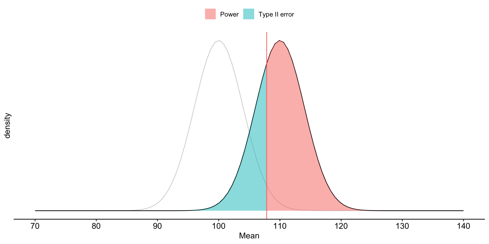
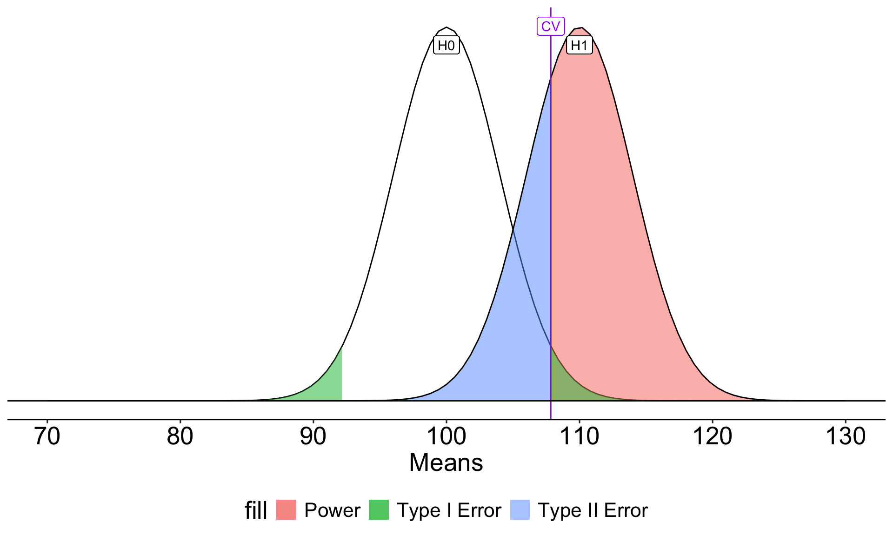
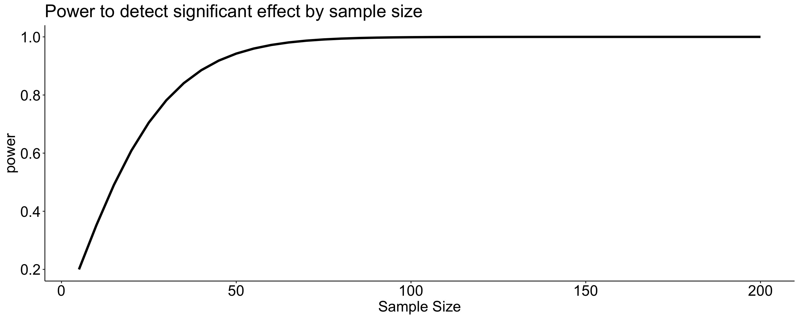
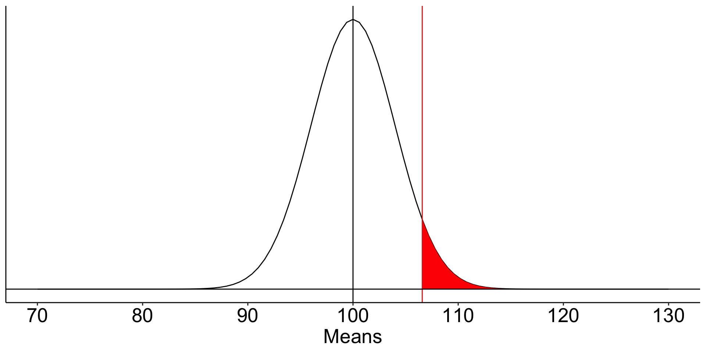
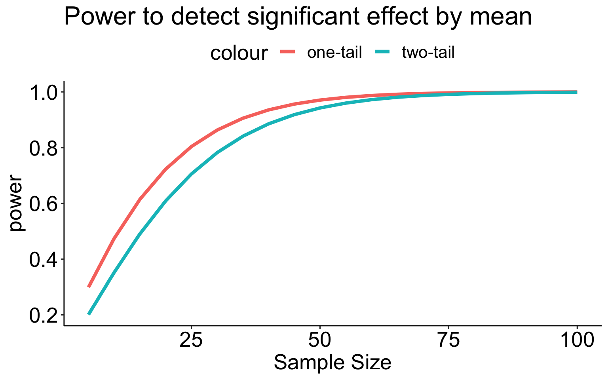
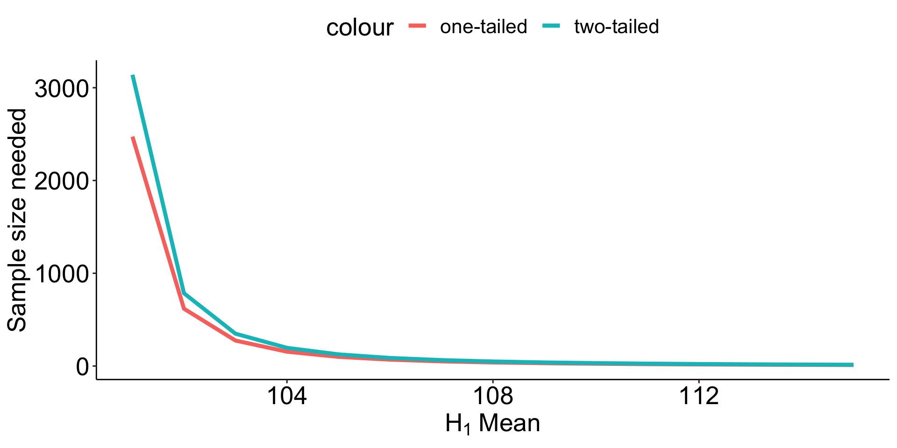

The null hypothesis ( \(H_0\) ) is a claim about the particular value that a population parameter takes.
The alternative hypothesis ( \(H_1\) ) states an alternative range of values for the population parameter.
We test the null hypothesis by determining if we have sufficient evidence that contradicts or nullifies it.
We reject the null hypothesis if the data in hand are rare, unusual, or atypical if the null were true. The alternative hypothesis gains support when the null is rejected, but \(H_1\) is not proven.
Review example
Healthy adults send an average of 32 text messages a day \((\sigma = 7.3)\). I recruit a sample of 16 adults with diagnoses of Generalized Anxiety Disorder. In my sample, the average number of texts sent per day is 33.2. Does my sample of adults with GAD come from the same population as healthy adults?
Define hypotheses
\(H_0: \mu_{GAD} = 32\)
\(H_0: \mu_{GAD} \neq 32\)
Choose alpha
\(\alpha = .05\)
Review example
Collect data.
Define your sampling distribution using your null hypothesis
Compare your probability ( \(p\)-value) to your \(\alpha\) level and decide whether your data are “statistically significant” (reject the null) or not (retain the null).
Our \(p\)-value is larger than our \(\alpha\) level, so we retain the null.
Review
If we do not reject \(H_0\), that does not mean that we accept it. We have simply failed to reject it. It lives to fight another day.
A Z-statistic summarizes how unusual the sample estimate of a mean compared to the value of the mean as specified by the null hypothesis.
More broadly, we refer to the test statistic as the statistic that summarizes how unusual the sample estimate of a parameter is from the point value specified by the null hypothesis.
Review
The test statistic is derived from a probability distribution that represents the likelihood of any sample estimated given that the null hypothesis is true.
We choose the probability distribution based on assumptions we are willing to make about the data. The sampling distribution of the test statistic tells us what counts as rare or unusual.
Review
We summarize the probability of the sample data (or even more extreme data), assuming the null is true, by the \(p\)-value (signified by \(p\)). This value is the proportion of the sampling distribution of the test statistic that is as extreme, or more extreme, as the test statistic value.
If \(p\) is small, the observed data are unusual if the null hypothesis is true.
If \(p\) is sufficiently small ( \(p < .05\) ), we may choose to reject the null hypothesis as a description of the data.
\(p\)-values
Fisher established (rather arbitrarily) the sanctity of the .05 and .01 significance levels during his work in agriculture, including work on the effectiveness of fertilizer. A common source of fertilizer is cow manure. Male cattle are called bulls.
A common misinterpretation of the \(p\)-value ( \(\alpha\) ) is that it is the probability of the null hypothesis being wrong.
Another common misunderstanding is that \(1-\alpha\) is the probability that results will replicate.
In most research, the probability that the null hypothesis is true is very small.
If the null hypothesis is false, then the only mistake to be made is a failure to detect a real effect.
We collect a sample and compare this to a null hypothesis: \(H_0: \mu_0 = 100\). Holding our sample mean \((\bar{X} = 105)\) constant, how does our \(p\)-value change as our sample size gets larger?
We collect a sample and compare this to a null hypothesis: \(H_0: \mu_0 = 100\). Holding our sample mean \((\bar{X} = 105)\) constant, how does our \(p\)-value change as our sample size gets larger?
Code
x_vals =seq(85, 115, by = .05)data.frame(m =100, s =15, n =seq(5, 150, 5)) %>%mutate(X =map(n, ~x_vals),density =map(n, ~dnorm(x = x_vals, m =100, s =15/sqrt(.x))),pvalue =map(n, ~pnorm(5/(15/sqrt(.x)), lower.tail = F)*2),pvalue =map_chr(pvalue, papaja::printp)) %>%unnest(cols =c(X, density)) %>%ggplot(aes(x=X, y=density, frame=n)) +geom_line() +geom_vline(aes(xintercept =105), color ="purple") +geom_label(aes(x =107, y = .2, label =paste("p:", pvalue)), hjust =0) +labs(x ="X",y ="density",title ="N = {closest_state}") +transition_states(n,transition_length =10,state_length =2) +theme_pubr()
If the null hypothesis is false, then the significance test is akin to a test of whether the sample size was large enough.
Because Null Hypothesis Significance Testing (NHST) is beginning to seem like a bit of a sham, some have suggested we start calling it Statistical Hypothesis Inference Testing.
Errors
In hypothesis testing, we can make two kinds of errors.
Reject \(H_0\)
Do not reject
\(H_0\) True
Type I Error
Correct decision
\(H_0\) False
Correct decision
Type II Error
Falsely rejecting the null hypothesis is a Type I error. Traditionally, this has been viewed as particularly important to control at a low level (akin to avoiding false conviction of an innocent defendant).
Errors
In hypothesis testing, we can make two kinds of errors.
Reject \(H_0\)
Do not reject
\(H_0\) True
Type I Error
Correct decision
\(H_0\) False
Correct decision
Type II Error
Failing to reject the null hypothesis when it is false is a Type II error. This is sometimes viewed as a failure in signal detection.
Errors
In hypothesis testing, we can make two kinds of errors.
Reject \(H_0\)
Do not reject
\(H_0\) True
Type I Error
Correct decision
\(H_0\) False
Correct decision
Type II Error
Null hypothesis testing is designed to make it easy to control Type I errors. We set a minimum proportion of such errors that we would be willing to tolerate in the long run. This is the significance level ( \(\alpha\) ). By tradition this is no greater than .05.
Errors
In hypothesis testing, we can make two kinds of errors.
Reject \(H_0\)
Do not reject
\(H_0\) True
Type I Error
Correct decision
\(H_0\) False
Correct decision
Type II Error
Controlling Type II errors is more challenging because it depends on several factors. But, we usually DO want to control these errors. Some argue that the null hypothesis is usually false, so the only error we can make is a Type II error – a failure to detect a signal that is present. Power is the probability of correctly rejecting a false null hypothesis.
Some Greek letters
\(\alpha\) : The rate at which we make Type I errors, which is the same \(\alpha\) as the cut-off for \(p\) -values.
\(\beta\) : The rate at which we make Type II errors.
\(1-\beta\) : statistical power.
Note that all these probability statements are being made in the frequentist sense – in the long run, we expect to make Type I errors \(\alpha\) proportion of the time and Type II errors \(\beta\) proportion of the time.
Controlling Type II errors is the goal of power analysis and must contend with four quantities that are interrelated:
Sample size
Effect size
Significance level ( \(\alpha\) )
Power
When any three are known, the remaining one can be determined. Usually this translates into determining the power present in a research design (post-hoc power analysis ), or, determining the sample size necessary to achieve a desired level of power.
We must specify a specific value for the alternative hypothesis to estimate and control Type II errors.
Suppose we have a measure of social sensitivity that we have administered to a random sample of 25 psychology students. This measure has a population mean ( \(\mu\) ) of 100 and a standard deviation ( \(\sigma\) ) of 20. We suspect that psychology students are more sensitive to others than is typical and want to know if their mean, which is 110, is sufficient evidence to reject the null hypothesis that they are no more sensitive than the rest of the population.
We would also like to know how likely it is that we could make a mistake by concluding that psychology students are not different when they really are: A Type II error.
We begin by defining the location in the null hypothesis distribution beyond which empirical results would be considered sufficiently unusual to lead us to reject the null hypothesis. We control these mistakes (Type I errors) at the chosen level of significance ( \(\alpha = .05\) ).
Code
mu =100xbar =110s =20n =25sem = s/sqrt(n)cv =qnorm(mean = mu, sd = sem, p = .025, lower.tail = F)cv2 =qnorm(mean = mu, sd = sem, p = .025, lower.tail = T)ggplot(data.frame(x =seq(70, 130)), aes(x)) +stat_function(fun =function(x) dnorm(x, m = mu, sd = sem)) +stat_function(fun =function(x) dnorm(x, m = mu, sd = sem),geom ="area", xlim =c(cv, 130), fill ="red") +geom_vline(aes(xintercept = cv), color ="red")+stat_function(fun =function(x) dnorm(x, m = mu, sd = sem),geom ="area", xlim =c(cv2, 70), fill ="red") +geom_vline(aes(xintercept = mu))+geom_hline(aes(yintercept =0))+scale_x_continuous("Means", breaks =seq(70,130,10)) +scale_y_continuous(NULL, breaks =NULL)+theme_pubr() +theme(text =element_text(size =20))
data.frame(x =seq(70, 140)) %>%ggplot(aes(x = x)) +stat_function(fun =function(x) dnorm(x, mean = mu, sd = sem),geom ="line", alpha = .2) +stat_function(fun =function(x) dnorm(x, mean = xbar, sd = sem),geom ="line") +stat_function(aes(fill ="Power"), fun =function(x) dnorm(x, mean = xbar, sd = sem),geom ="area", xlim =c(cv, 140),alpha = .5) +stat_function(aes(fill ="Type II error"), fun =function(x) dnorm(x, mean = xbar, sd = sem),geom ="area", xlim =c(70, cv),alpha = .5) +geom_vline(aes(xintercept = cv, color ="Critical Value")) +guides(color ="none") +scale_x_continuous(limits =c(70,140), breaks =seq(70, 140, 10)) +scale_y_continuous(breaks =NULL) +labs(x ="Mean", y ="density", fill =NULL)+theme_pubr()

To determine the probability of a Type II error, we must specify a value for the alternative hypothesis. We will use the sample mean of 110.
In the long run, if psychology samples have a mean of 110 ( \(\sigma = 20\), \(N = 25\) ), we will correctly reject the null with probability of 0.71 (power). We will incorrectly fail to reject the null with probability of 0.29 ( \(\beta\) ).

Once the critical value and alternative value is established, we can determine the location of the critical value in the alternative distribution.
The proportion of the alternative distribution that falls below that point is the probability of a Type II error (.29); power is then .71.
pnorm(-.54)
[1] 0.2945985
The choice of 110 as the mean of \(H_1\) is completely arbitrary. What if we believe that the alternative mean is 115? This larger signal should be easier to detect.
What if instead we increase the sample size? This will reduce variability in the sampling distribution, making the difference between the null and alternative distributions easier to see. (New \(N\) is 50.)
Oops, we’ve been ignoring the other tail. So far it hasn’t mattered (the area has been so small) but it makes a difference when \(H_0\) and \(H_1\) overlap significantly.
More generally we can determine the relationship between effect size and power for a constant \(\alpha\) (.05) and sample size ( \(N = 20\) ).
Code
pwr_fun =function(m1, m2, alpha, n, sd){ sem = sd/sqrt(n) cv =qnorm(p =1-(alpha/2), mean = m1, sd = sem) z_1 = (cv-m2)/sem power =pnorm(q = z_1, lower.tail = F)return(power)}size =seq(100, 120, 1)data.frame(effect = size, power =sapply(size, function(x) pwr_fun(m1 =100, m2 = x, alpha = .05, n =20, sd =20))) %>%ggplot(aes(x = effect, y = power)) +geom_line(size =1.5) +scale_x_continuous(expression(H[1]~Mean)) +ggtitle("Power to detect significant effect by mean") +theme_pubr() +theme(text =element_text(size =20))
Likewise, we can display the relationship between sample size and power for a constant \(\alpha\) and effect size.
Code
size =seq(5,200,5)data.frame(size = size, power =sapply(size, function(x) pwr_fun(m1 =100, m2 =110, alpha = .05, n = x, sd =20))) %>%ggplot(aes(x = size, y = power)) +geom_line(size =1.5) +scale_x_continuous("Sample Size") +ggtitle("Power to detect significant effect by sample size") +theme_pubr() +theme(text =element_text(size =20))

Power changes as a function of significance level for a constant effect size and sample size.
Code
size =seq(.01,.20,.01)data.frame(alpha = size, power =sapply(size, function(x) pwr_fun(m1 =100, m2 =110, alpha = x, n =20, sd =20))) %>%ggplot(aes(x = alpha, y = power)) +geom_line(size =1.5) +scale_x_continuous(expression(alpha)) +ggtitle("Power to detect significant effect by alpha") +theme_pubr() +theme(text =element_text(size =20))

For a one-tailed test, we put the entire rejection area into a single tail. If \(\alpha = .05\), then one tail contains .05 and critical values will be either 1.64 or -1.64 standard errors away from the null mean.
Code
mu =100x =110s =20n =25sem = s/sqrt(n)cv_sngle =qnorm(mean = mu, sd = sem, p = .05, lower.tail = F)ggplot(data.frame(x =seq(70, 130)), aes(x)) +stat_function(fun =function(x) dnorm(x, m = mu, sd = sem)) +stat_function(fun =function(x) dnorm(x, m = mu, sd = sem),geom ="area", xlim =c(cv_sngle, 130), fill ="red") +geom_vline(aes(xintercept = cv_sngle), color ="red")+geom_vline(aes(xintercept = mu))+geom_hline(aes(yintercept =0))+scale_x_continuous("Means", breaks =seq(70,130,10)) +scale_y_continuous(NULL, breaks =NULL) +theme_pubr() +theme(text =element_text(size =20))

A two-tailed test is less powerful (more conservative) than a one-tailed test for the same sample size.
Code
pwr1_fun =function(m1, m2, alpha, n, sd){ sem = sd/sqrt(n) cv =qnorm(p =1-(alpha), mean = m1, sd = sem) z_1 = (cv-m2)/sem power =pnorm(q = z_1, lower.tail = F)return(power)}pwr2_fun =function(m1, m2, alpha, n, sd){ sem = sd/sqrt(n) cv_1 =qnorm(p =1-(alpha/2), mean = m1, sd = sem) cv_2 =qnorm(p = (alpha/2), mean = m1, sd = sem) z_1 = (cv_1-m2)/sem z_2 = (cv_2-m2)/sem power =pnorm(q = z_1, lower.tail = F) +pnorm(q = z_2, lower.tail = T)return(power)}size =seq(5,100,5)data.frame(effect = size, power_1 =sapply(size, function(x) pwr1_fun(m1 =100, m2 =110, alpha = .05, n = x, sd =20)),power_2 =sapply(size, function(x) pwr2_fun(m1 =100, m2 =110, alpha = .05, n = x, sd =20))) %>%ggplot(aes(x = effect)) +geom_line(aes(y = power_1, color ="one-tail"), size =1.5) +geom_line(aes(y = power_2, color ="two-tail"), size =1.5) +scale_x_continuous("Sample Size") +scale_y_continuous("power")+ggtitle("Power to detect significant effect by mean") +theme_pubr() +theme(text =element_text(size =20))

Code
means =data.frame(means =seq(101, 115, .2)) %>%mutate(d =abs(means-100)/20) means$power_1 =sapply(means$d, function(x) pwr.norm.test(d = x, sig.level = .05, power = .80, alternative ="greater")$n)means$power_2 =sapply(means$d, function(x) pwr.norm.test(d = x, sig.level = .05, power = .80, alternative ="two.sided")$n)means %>%ggplot(aes(x = means)) +geom_line(aes(y=power_1, color ="one-tailed"), size =1.5) +geom_line(aes(y=power_2, color ="two-tailed"), size =1.5) +scale_x_continuous(expression(H[1]~Mean))+scale_y_continuous("Sample size needed") +theme_pubr() +theme(text =element_text(size =20))